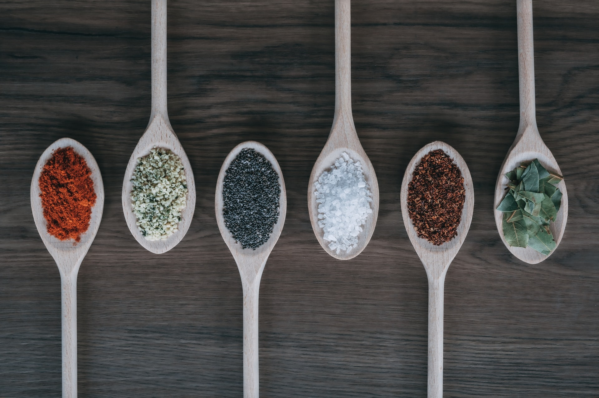
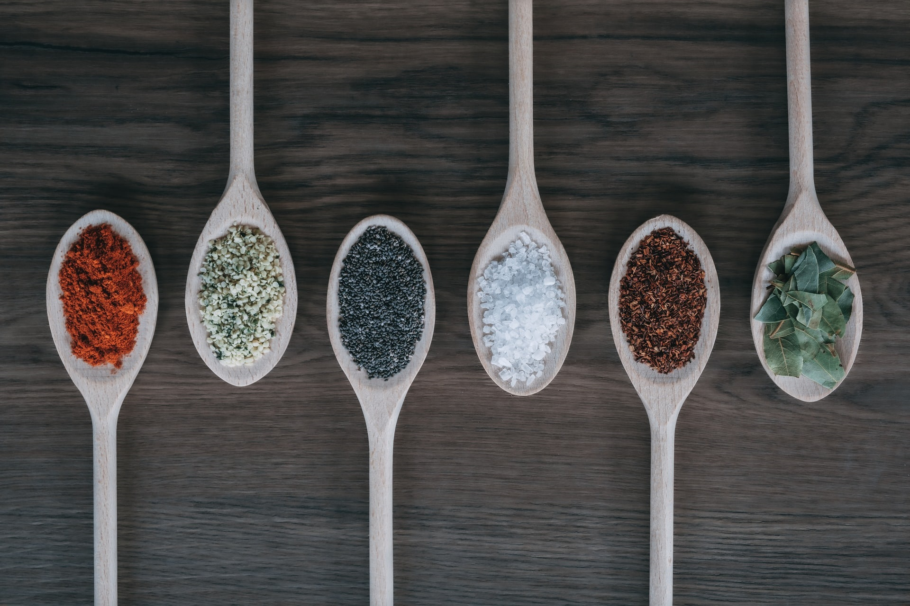

Bienvenidos al blog de Be Your Own Chef. Este blog trata sobre alimentos nutritivos caseros con un lado de reflexiones sobre la alimentación consciente, la vida lenta y la creación de una conexión saludable con la comida para encontrar un equilibrio entre la comida y el proceso de alimentarnos todos los días. Sobre todo, encontrará recetas fácil de preparar. Bienvenidos de nuevo y espero que encuentren mucha inspiración en nuestro blog para cocinar en casa. eligendi ex eos cupiditate officia? Voluptatem, beatae aliquid! Beatae, facere? Quos veniam consequuntur earum cumque! Sit repudiandae architecto reiciendis vero, illum debitis dicta corporis. Assumenda iure vitae eaque consequatur tenetur laborum culpa, deleniti voluptatibus. Illo ipsa in facere? Obcaecati expedita voluptatum quas atque recusandae fugiat veniam quasi quibusdam quo. Perspiciatis voluptatum in quam officia dolore animi. Pariatur, fuga blanditiis tenetur eum quis officia amet rerum nisi sapiente nihil! Facere inventore rerum incidunt eos cumque sapiente perspiciatis illum dolorum labore officiis! Praesentium officiis tenetur eos quo cupiditate deleniti odit? Aliquam, ea nesciunt molestias a iusto quos incidunt quod id?
 
